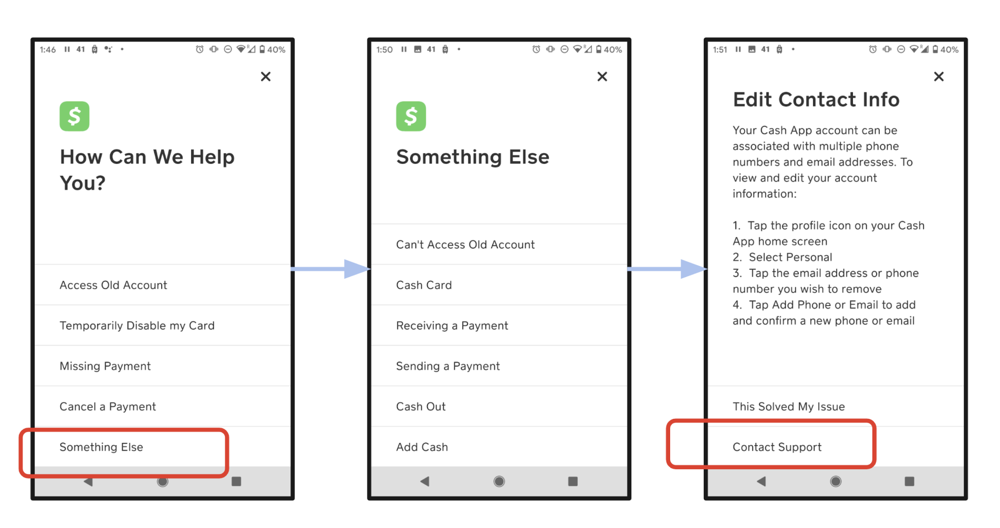

Defining the problem
How can we improve content discoverability?
Currently, our customers must navigate through a content tree with little guidance as to topics, direction or organization. This is not ideal as customers who are under distress and looking for solutions, may not be willing to bear the addition cognitive load required to navigate through our content (although a solution may just be a few clicks away).

Referencing Data
Validating the Story

Our data tells reveals a similar story: on entering our support page,
- 64% of customers create a case within 30 seconds.
- 75% of customers create a case under a minute
Almost a tenth of cases are created when the customers are repeatedly scrolling to the bottom, not reading the content and just trying to find a “contact support button”.
Evidently, we have a very small budget of customer attention to work with, justifying the need for a quick and low-effort interaction. Based on our findings, we decided to create a search system.
- 64% of customers create a case within 30 seconds.
- 75% of customers create a case under a minute
Almost a tenth of cases are created when the customers are repeatedly scrolling to the bottom, not reading the content and just trying to find a “contact support button”.
Evidently, we have a very small budget of customer attention to work with, justifying the need for a quick and low-effort interaction. Based on our findings, we decided to create a search system.